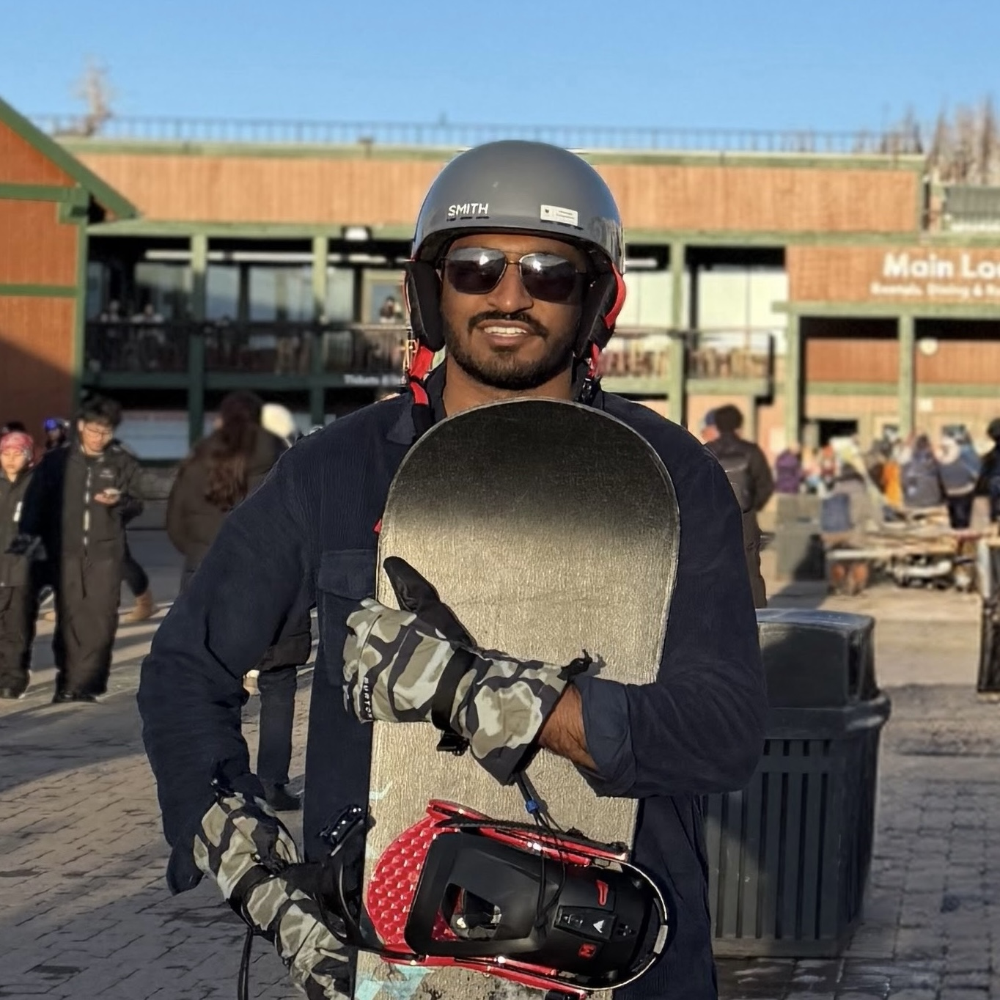
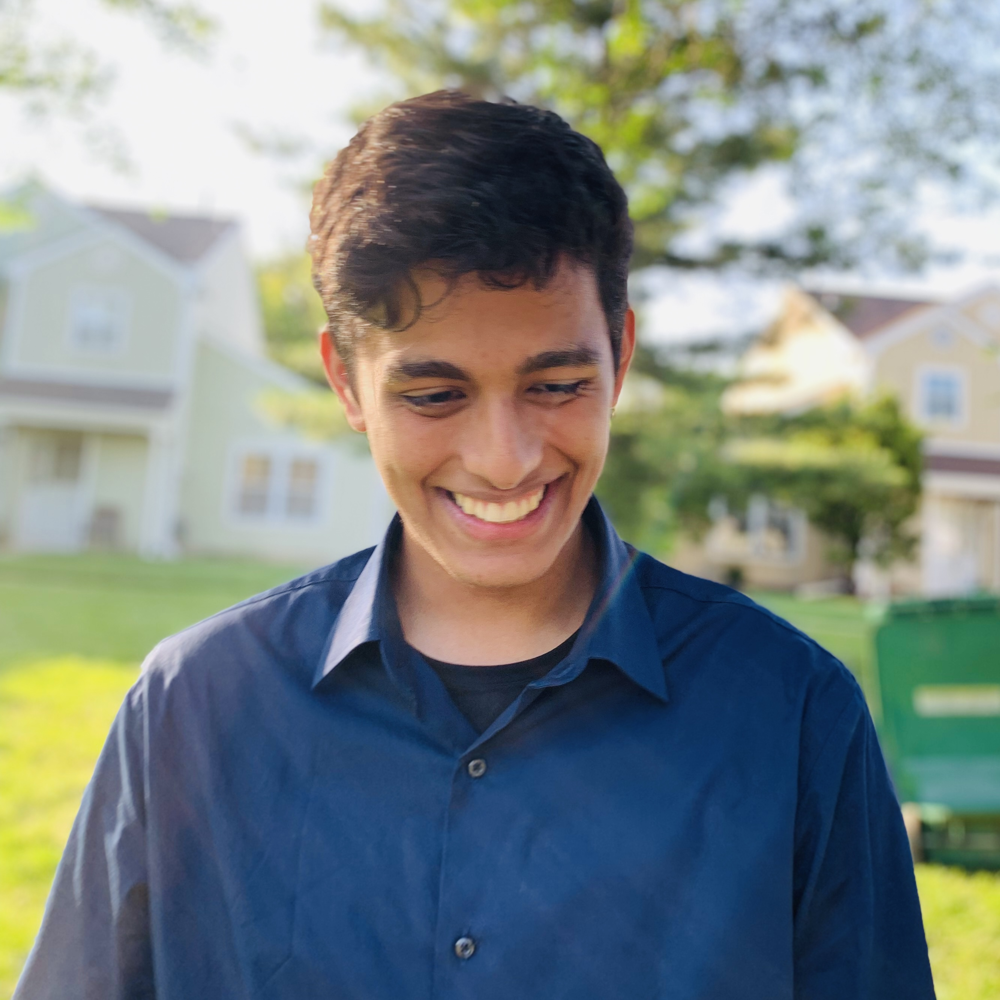

Introduction
Teleoperation has driven progress in robot learning, but it is fundamentally limiting: control interfaces introduce latency and reduce degrees of freedom, producing demonstrations that lack the natural dexterity and diverse strategies humans exhibit in everyday manipulation. Human video and simulation each offer qualitatively different strengths. Unscripted human video captures whole-body coordination, tool use, and manipulation strategies that no teleoperation interface can reproduce. Simulation enables exploration of contact-rich dynamics, failure recovery, and edge cases at scale. Yet both carry challenges: embodiment mismatch and the sim-to-real gap. The central question is not just how do we get more data, but how do we extract what makes these sources qualitatively richer, and bridge the gaps that separate them from deployable robot skills?
This workshop focuses on methods that:
- Learn dexterous manipulation skills from human demonstrations, going beyond what teleoperation interfaces can capture
- Build world models grounded in real-world physics from diverse, in-the-wild video data
- Use small, high-quality teleoperation data as an anchor alongside large-scale, diverse off-domain sources
- Bridge embodiment and sim-to-real gaps to transfer manipulation skills across domains
We bring together researchers working on learning from human data, simulation, and robot teleoperation to share insights and collaborate on building more general-purpose manipulation systems.
Call for Papers
We invite original contributions presenting novel ideas, research, and applications relevant to the workshop's theme.
Important Dates
| Event | Date |
|---|---|
| Submission Deadline | April 24th, 2026 11:59pm AOE |
| Decisions | May 11th, 2026 |
Submission Guidelines
- 4 pages (excluding references and appendices). Use the ICRA 2026 template.
- All submissions must be anonymized.
- Non-archival; dual submission to other non-archival venues is permitted.
- Accepted papers will be presented as posters; select papers may be invited for spotlight talks.
- Submit via OpenReview.
Paper Topics
Learning from Human Videos
- How can we extract dexterous manipulation skills from human video without direct motion retargeting?
- What representations best capture manipulation intent across different embodiments?
- How should we design data collection hardware and systems for learning from humans?
Learning from Simulation
- Can world models trained on in-the-wild video generalize to contact-rich manipulation?
- How can real-to-sim-to-real pipelines be grounded in real human activity?
- What level of simulation fidelity is actually needed for effective sim-to-real transfer?
Combining Diverse Data Sources
- Is small, high-quality teleop data a necessary anchor for grounding noisy large-scale data?
- How can human-in-the-loop methods improve robot policies trained on diverse data?
- What are effective strategies for combining human, simulated, and robot data for collaborative manipulation?
Submissions on any related topics are also welcome.
Confirmed Speakers
Panel Discussion
Our panel with the invited speakers (4:00-5:00pm) will cover questions such as:
- Does the community truly need to move beyond teleoperation? Should we favor massive (but noisy) human/sim data, or smaller (but clean) robot datasets?
- What are the "hidden" costs behind using human/simulation data? Can we combine both sources to get the best of both worlds?
- Is small, high-quality teleop data a necessary "anchor" for grounding large-scale human video/simulation training?
Workshop Schedule
| Start Time | End Time | Event |
|---|---|---|
| 08:30 | 09:00 | Welcome (Organizers) |
| 09:00 | 09:30 | Talk 1: Jitendra Malik |
| 09:30 | 10:00 | Talk 2: Edward Johns |
| 10:00 | 11:00 | Break + Poster Session |
| 11:00 | 11:30 | Talk 3: Danfei Xu |
| 11:30 | 12:00 | Talk 4: Karen Liu |
| 12:00 | 12:30 | Talk 5: Katerina Fragkiadaki |
| 12:30 | 13:30 | Break |
| 13:30 | 14:00 | Talk 6: Yue Wang |
| 14:00 | 14:30 | Talk 7: Roberto Martín-Martín |
| 14:30 | 15:00 | Student Spotlights |
| 15:00 | 16:00 | Break + Poster Session |
| 16:00 | 17:00 | Panel Discussion |
| 17:00 | 17:30 | Closing Remarks |
Organizers



Contact
For inquiries, reach us at icra-beyond-teleop@googlegroups.com.